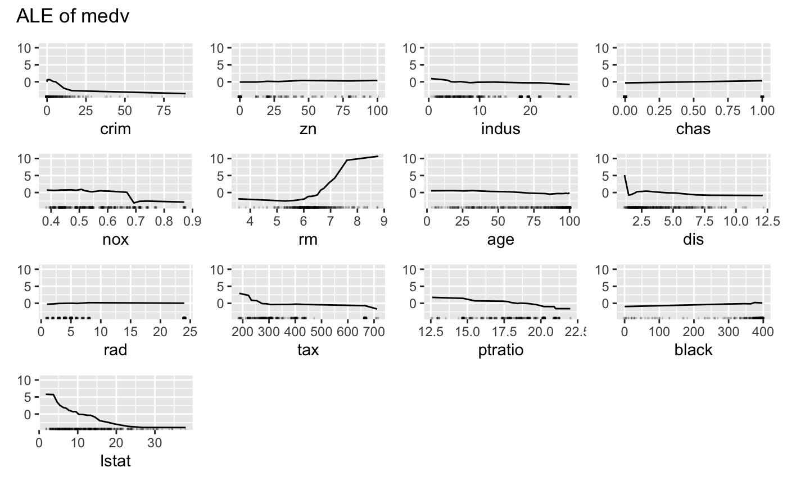
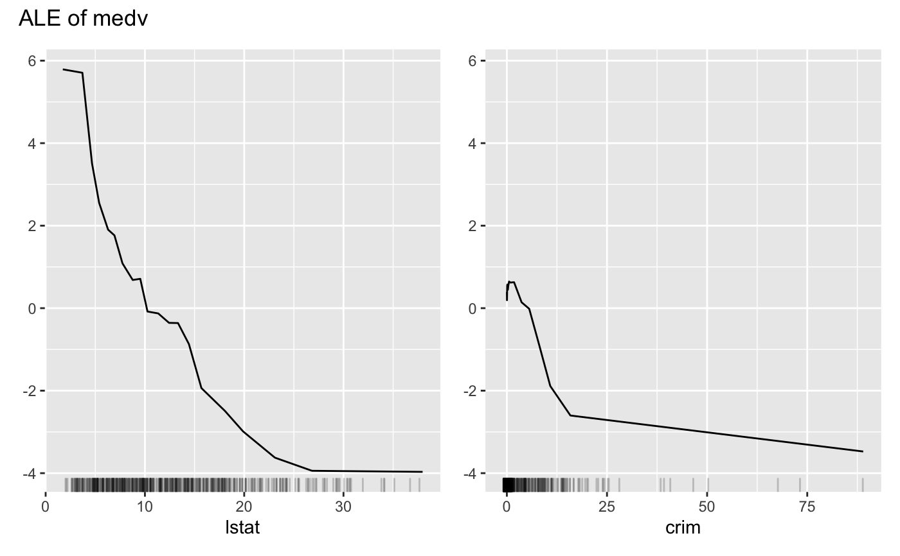
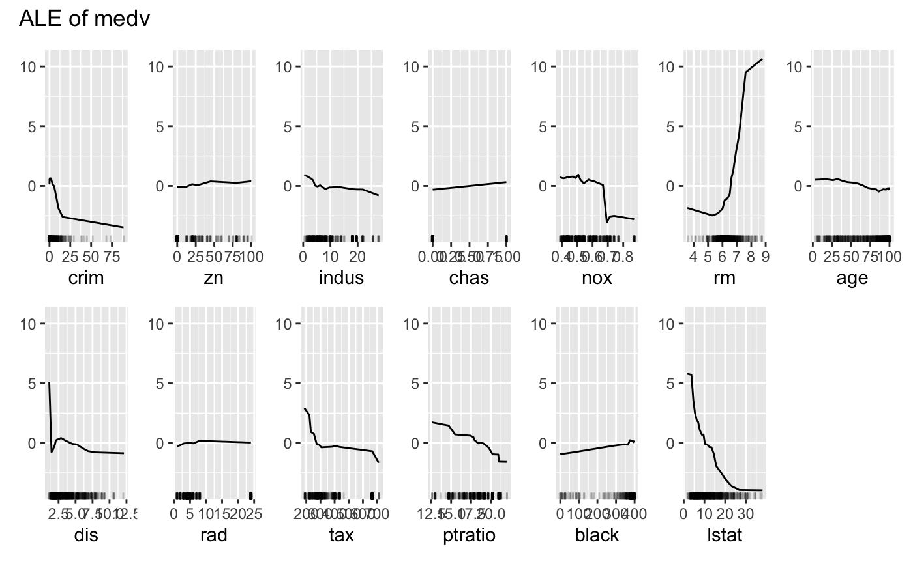

plot.FeatureEffect() plots the results of a FeatureEffect object.
# S3 method for FeatureEffects plot(x, features = NULL, nrows = NULL, ncols = NULL, fixed_y = TRUE, ...)
| x | A FeatureEffect object. |
|---|---|
| features | character For which features should the effects be plotted? Default is all features. You can also sort the order of the plots with this argument. |
| nrows | The number of rows in the table of graphics |
| ncols | The number of columns in the table of graphics |
| fixed_y | Should the y-axis range be the same for all effects? Defaults to TRUE. |
| ... | Further arguments for |
grid object
In contrast to other plot methods in iml, for FeatureEffects the returned plot is not a ggplot2 object, but a grid object, a collection of multiple ggplot2 plots.
# We train a random forest on the Boston dataset: library("randomForest") data("Boston", package = "MASS") rf <- randomForest(medv ~ ., data = Boston, ntree = 50) mod <- Predictor$new(rf, data = Boston) # Compute the partial dependence for the first feature eff <- FeatureEffects$new(mod) # Plot the results directly eff$plot()